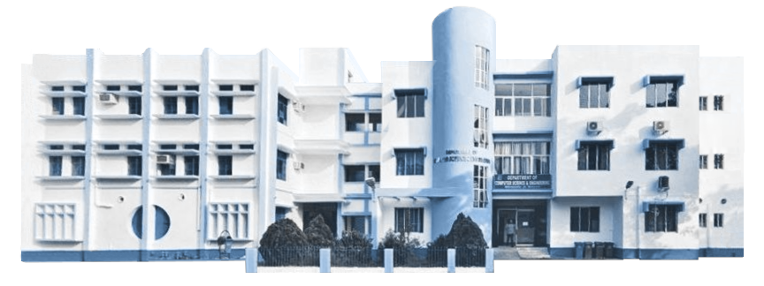

welcome to the department.
The Department of Meows Science & Engineering is relatively new compared to other academic departments of the University. This department was established in 1992. It started functioning in the Department of Physics, University of Kalyani, with only one course and that was Postgraduate Diploma in Computer Application (PGDCA) with student strength of fifteen. Subsequently, at the end of 2002, the Department started functioning in its new building. The two existing courses, Master in Computer Application (MCA) and Master of Technology in Computer Science (M.Tech.) were started from 2001 and 2003 respectively.
Section
The department currently has seven efficient faculty members and seven other staffs to run the courses smoothly. Healthy teacher-student relationship and well equipped laboratories have paved the way towards growth in the IT sector. The department recognizes the importance of Information Technology in the modern world and is dedicated towards making all possible efforts to place its students in the run.
giat malesuada eget id lacus. Phasellus lorem magna, dignissim a nisi ut, placerat egestas ex. Maecenas dui risus, accumsan eu feugiat sit amet, tincidunt et lectus. Sed in libero lacus. Etiam dolor elit, elementum eget rhoncus et, luctus eget enim.